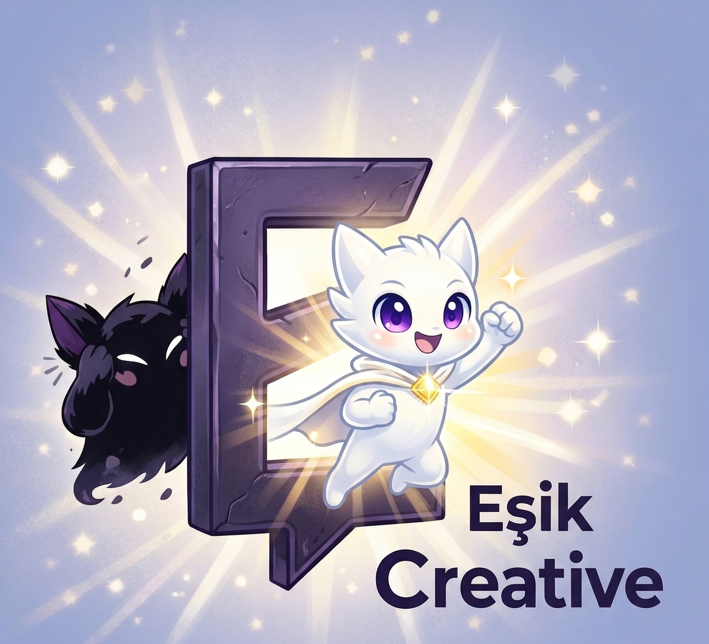
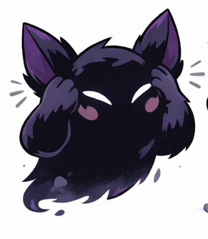
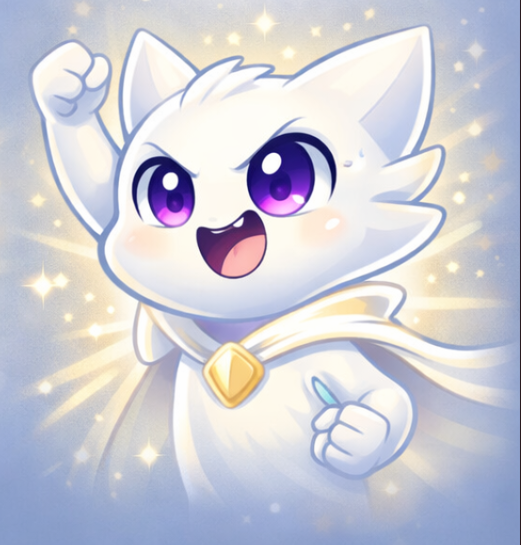
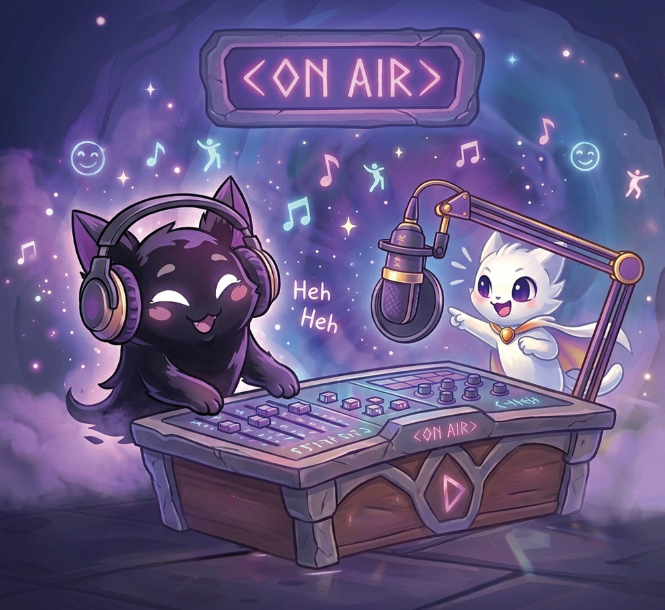
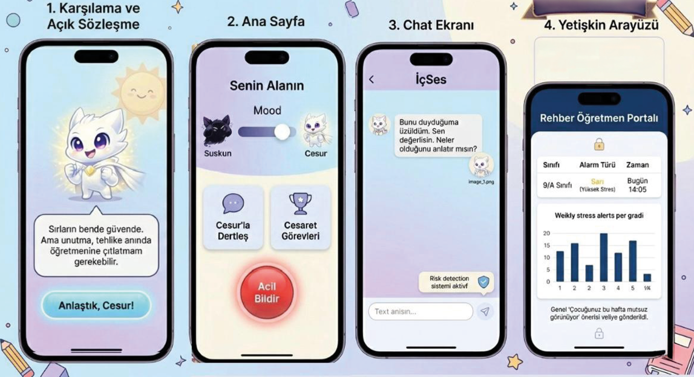
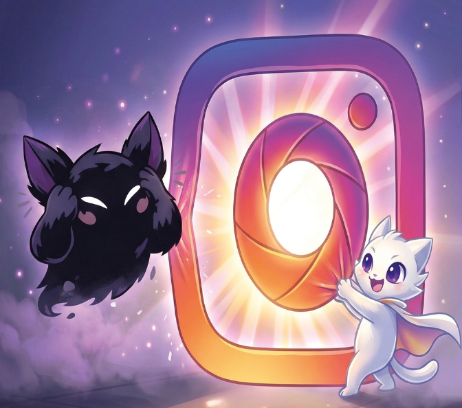

İçindeki Cesareti Keşfet!
Yolculuğa hazırsan başlayalım!
Biz Kimiz, Amacımız Ne?
Zorbalık karşısında herkes bir eşikte durur... Kimi susar, kimiyse cesur olur.
Biz "Eşik" kreatif ekibiyiz. Amacımız zorbalığa tanık olan çocukların "bana da bulaşırlar" korkusunu kırmak ve sessiz kalmanın asıl tehlike olduğunu göstererek onları tepki vermeye, bildirmeye ve konuşmaya teşvik etmektir.

Suskun
Çocuğun içindeki korku, kaygı ve susma güdüsünün vücut bulmuş halidir. Zorbalığa tanık olup sesini çıkaramayan, görünmez olmak isteyen içsel duyguyu simgeler.

Cesur
Doğru olanı yapmak için adım atma, adalet ve yüreklendirmeyi temsil eder. Suskunluğu bozup bildirme cesaretini gösteren güçlü ve umut dolu tarafı simgeler.
Radyo Spotu

Akıllı Tahta Oyunu
Cesaretini Oyunda Keşfet
Teneffüslerde oynanabilen akıllı tahtalara uyarlanmış harika bir 3. şahıs bakış açısı (POV) oyunu. Ekranda gelen zorba ithamlara veya pasif-agresif sözlere karşı çoktan seçmeli cevaplar sunulur. Her cevaba göre oyunun senaryosu şekillenir.
Çocuklar doğru ve cesaretli cevabı seçtikçe içlerindeki "Cesur" güçlenir, kelime dağarcıkları ve kendilerini savunma (psikolojik savunma) mekanizmaları gelişir.
Aynı zamanda arkadaşlarından gördükleri bu gibi söylem veya durumların bir şaka değil zorbalık olduğu farkındalığına varırlar.
Zorbalık Farkındalık Testi
Çocuğunuz Risk Altında Mı?
Lütfen aşağıdaki 5 soruyu son zamanlardaki gözlemlerinize dayanarak içtenlikle cevaplayın. Test sonucu sadece ekranınızda hesaplanır, hiçbir yere kaydedilmez.
1. Çocuğunuz son zamanlarda okula gitmek istememe, karın ağrısı veya baş ağrısı gibi fiziksel mazeretler üretiyor mu?
2. Eşyaları (defter, okul çantası, kıyafet vb.) sık sık kaybolmuş veya sebepsiz yere zarar görmüş olarak eve dönüyor mu?
3. Uyku düzeninde bozulmalar, gece uyanmaları veya içine kapanıklık başladı mı?
4. Okuldaki veya mahalledeki arkadaşları hakkında konuşmaktan kaçınıyor veya "kimse beni sevmiyor" diyor mu?
5. Ekrana (telefon/tablet) bakarken aniden öfkelenme veya ekranı gizleme eğilimleri var mı?
Cesur Asistan



Kişisel Asistanın Seninle
Uygulamamız bir kişisel asistan gibidir. Çocuk bu yapay zeka (Cesur Asistan) ile dertleşebilir. Yapay zeka, pedagog onaylı senaryolarla çocuğa destek verir.
Eğer yazılım ciddi bir risk kelimesi (şiddet, zarar verme vb.) algılarsa, açılan oturum üzerinden okulun rehberlik ve PDR sistemine anında bir uyarı gönderir.
Veli oturumuyla da entegre çalışarak ebeveynlere genel "Çocuğunuz bu aralar stresli olabilir" gibi yönlendirici bildirimler yollayabilir.
Bizi Takip Et
